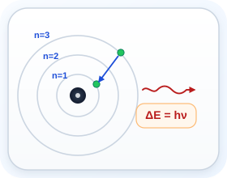
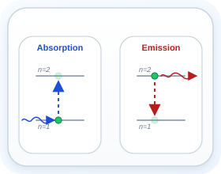
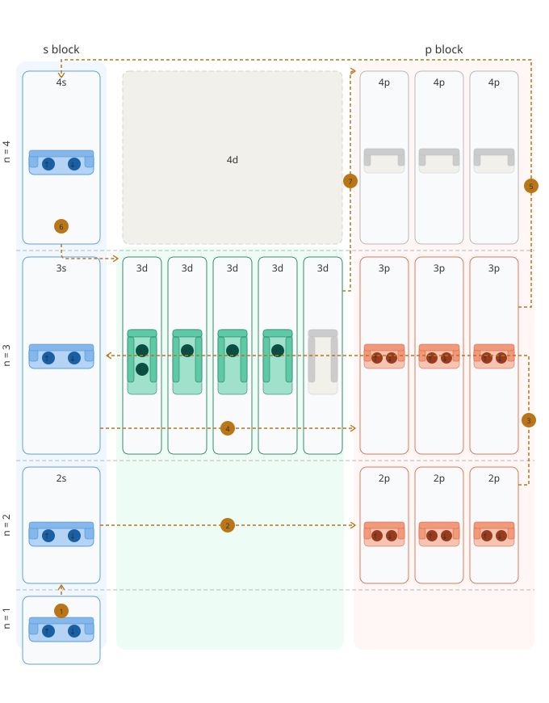

Electron Configuration
Start here if electron configuration feels like random superscripts and arrows. This unit turns it into a system: where electrons go, why they fill in that order, and how that sets up periodic trends, ions, and bonding.
What you'll learn
4.1 Start Here: What Electron Configuration Is Really Showing
Every atom has electrons, but they are not arranged randomly. They occupy specific allowed energies, and electron configuration is the shorthand chemists use to show that arrangement.
Remember the order for this unit: light shows that atoms have fixed energies, Bohr gives the first energy-level model, and the modern model adds shells, sublevels, and orbitals. Then electron configuration becomes a map of where the electrons go.

Electrons and energy
Electrons can only have certain allowed energies. They do not slide continuously between values.

Why light matters
Atoms absorb light to move electrons up and emit light when electrons drop back down. Those jumps reveal the pattern of allowed energies inside the atom.
By the end, a notation like 1s² 2s² 2p⁴ will mean something physical: which energy levels exist, which sublevels exist inside them, and how many electrons occupy each one.
- Electron configuration is not just a code to memorize. It is a summary of the atom's energy pattern.
- The whole topic starts with light because light is how atoms reveal those energy patterns.
- Do not miss this: if you understand the structure, the notation gets much easier to read.
4.2 Light, Wavelength, Frequency, and Photon Energy
Light is how we know what electrons are doing inside atoms. Understanding wavelength, frequency, and energy is the foundation for understanding Bohr levels and electron configuration. If this feels shaky, slow down here, because the rest of the unit depends on it.
Light travels as a wave and also comes in discrete packets called photons. Two properties describe any light wave:
- Wavelength (λ, lambda) — the distance between two wave peaks, measured in meters (or nm). Longer λ = lower energy.
- Frequency (ν, nu) — how many wave cycles pass a point per second, measured in Hz (s⁻¹). Higher ν = higher energy.
Visible light is only a small slice of the full electromagnetic spectrum.
Visible Light, Zoomed In
Approximate wavelength ranges in nmRearranged: λ = c / ν and ν = c / λ
The energy of one photon of light is given by Planck's equation:
Combining both equations: E = hc / λ
- Wavelength and frequency always move in opposite directions.
- As wavelength gets longer, frequency gets smaller, and energy gets smaller with it.
- Ultraviolet light (short λ) carries more energy per photon than infrared light (long λ).
- Common mistake: treating wavelength and frequency as if they rise together. They do not.
4.3 Atomic Emission Spectra, Bohr, and What n Means
When a gas is heated or electrically excited, its atoms absorb energy and electrons jump to higher energy levels (excited states). When those electrons fall back to lower levels, they release that energy as light — but only at specific wavelengths. This produces a line emission spectrum, not a continuous rainbow.
Niels Bohr explained this by proposing that electrons can occupy only certain allowed energy levels. In Bohr's model, the number n labels those levels: n = 1, 2, 3, ...
This is the key bridge for the whole unit: the principal quantum number n is the label for the main energy level, also called a shell. So when you hear shell 1, energy level 1, or n = 1, those all refer to the same main level.
Ephoton = |ΔEatom| = hν
For hydrogen specifically, the energy of each level is:
Bohr's model gets us the idea of fixed main energy levels. The modern quantum model keeps those main levels, but adds more detail inside each one: each shell contains smaller energy regions called sublevels.
- The four visible hydrogen lines commonly used in intro chemistry are about 656 nm, 486 nm, 434 nm, and 410 nm.
- Different electron jumps produce different wavelengths because each jump has a different energy gap.
- Important vocabulary bridge: principal quantum number = shell number = main energy level number.
4.4 Shells, Sublevels, Orbitals, and Where Electrons Actually Go
Each main energy level, or shell, contains smaller parts called sublevels. The sublevels are named s, p, d, and f.
Each sublevel contains orbitals, and each orbital can hold up to 2 electrons. Start here with the structure: shell → sublevel → orbital → electrons.
The number of sublevels in a shell equals the value of n. So shell 1 has only one sublevel (1s), shell 2 has two sublevels (2s and 2p), shell 3 has three (3s, 3p, 3d), and so on.
| Sublevel | Number of Orbitals | Max Electrons | Memory Hook |
|---|---|---|---|
| s | 1 | 2 | "s is solo — just 1 orbital" |
| p | 3 | 6 | "p has a pair of 3s" |
| d | 5 | 10 | "d has a dozen minus two" |
| f | 7 | 14 | "f is fourteen" |
That is why a 1-orbital s sublevel holds 2 electrons, while a 3-orbital p sublevel holds 6. A p sublevel has 3 orbitals, so 4 electrons in 2p⁴ must be spread across 3 boxes.
- The leading number tells you the main energy level, or value of n.
- The letter tells you the sublevel inside that shell.
- The superscript tells you how many electrons are in that sublevel.
- Common mistake: thinking an orbital and a sublevel are the same thing. They are not.
4.5 Shell Capacity Is Not the Same as Filling Order
The total number of electrons that fit in each principal shell comes from adding the sublevels inside that shell together:
- n = 1: only s → 2 electrons
- n = 2: s + p → 2 + 6 = 8 electrons
- n = 3: s + p + d → 2 + 6 + 10 = 18 electrons
- n = 4: s + p + d + f → 2 + 6 + 10 + 14 = 32 electrons
Important: these totals tell you the maximum capacity of a shell. They do not tell you which sublevel fills next. Filling order follows sublevel energy, so 4s starts before 3d even though 3d belongs to shell 3.
| Sublevel | # Orbitals | Max electrons | First appears at |
|---|---|---|---|
| s | 1 | 2 | n = 1 (1s) |
| p | 3 | 6 | n = 2 (2p) |
| d | 5 | 10 | n = 3 (3d) |
| f | 7 | 14 | n = 4 (4f) |
Think of it like a building: the shell is the floor number, the sublevels are different hallways on that floor, and the orbitals are the individual rooms. Electron configuration tells you which rooms are occupied.
- Capacity question: "How many electrons could fit in shell 3?" Answer: 18.
- Filling-order question: "After 3p, what fills next in this course?" Answer: 4s.
- Students mix these two ideas up all the time. Keep them separate.
4.6 The Three Rules for Filling Electrons
For neutral atoms in this course, electrons fill the lowest available energy sublevel first. That is why 4s fills before 3d in the configurations you will write here.

In the diagram, blue cards are s sublevels, green cards are d sublevels, and red cards are p sublevels. The numbered amber arrows show the filling order, and iron ends at 4s² 3d⁶, so one 3d orbital is paired while four are singly occupied.
Quick Structure Map
- Shell = main energy level.
- Sublevel = s, p, d, or f section inside that shell.
- Orbital = one box that can hold up to 2 electrons.
The Three Rules
- Aufbau: fill the lowest-energy sublevel first.
- Pauli: at most 2 electrons can share one orbital, and they must have opposite spins.
- Hund: in equal-energy orbitals, place one electron in each orbital before pairing.
Each orbital holds a maximum of 2 electrons, and they must have opposite spins (one ↑, one ↓). You cannot place two spin-up electrons in the same orbital.
When filling a sublevel with multiple orbitals (p, d, or f), put one electron in each orbital first (all with the same spin, ↑) before doubling up in any orbital. Electrons prefer to spread out and stay unpaired when they can.
Why? Electrons repel each other. Spreading out into separate orbitals reduces electron-electron repulsion and lowers the atom's energy.
4.7 Writing Electron Configurations Step by Step
Start with the standard filling pattern. For beginner work, first decide the last-filled sublevel, then write each sublevel in order and count electrons carefully. If this feels shaky, do not jump straight to shorthand yet.
| Element (Z) | Configuration shown | Noble-gas shorthand |
|---|---|---|
| H (1) | 1s¹ | — |
| He (2) | 1s² | — |
| Li (3) | 1s² 2s¹ | [He] 2s¹ |
| C (6) | 1s² 2s² 2p² | [He] 2s² 2p² |
| Ne (10) | 1s² 2s² 2p⁶ | — |
| Na (11) | 1s² 2s² 2p⁶ 3s¹ | [Ne] 3s¹ |
| Ar (18) | 1s² 2s² 2p⁶ 3s² 3p⁶ | — |
| K (19) | 1s² 2s² 2p⁶ 3s² 3p⁶ 4s¹ | [Ar] 4s¹ |
| Fe (26) | 1s² 2s² 2p⁶ 3s² 3p⁶ 4s² 3d⁶ | [Ar] 4s² 3d⁶ |
After the standard pattern is secure, then learn the common exceptions such as Cr and Cu.
Exception Note
Chromium and copper do not follow the simple Aufbau prediction exactly. These are special cases you learn after the standard pattern.
- Noble-gas shorthand replaces the inner electrons with the symbol of the noble gas before your element on the periodic table.
- For example, K (Z=19) is written [Ar] 4s¹ because Ar (Z=18) is the noble gas just before K.
- The [Ar] stands for all 18 inner electrons, so you only need to write the outer electrons.
- Common mistake: choosing the next noble gas after the element instead of the one before it.
4.8 Use the Periodic Table as an Electron-Configuration Map
The periodic table is organized by the sublevel being filled. Each block corresponds directly to a sublevel type. Start here if you tend to freeze on long configurations, because the table gives you the pattern.
Use the table to answer one question first: which sublevel is being filled last? First find the block. Then use the period to choose the number. Click an element to test that one decision in Explore.
- Block tells you which type of sublevel is being filled last.
- Period helps you find the main energy level number.
- For d-block elements, the d sublevel number is usually one less than the period number.